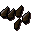
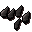
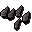
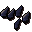
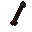
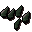
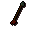

Headless arrow
| Config name | headless_arrow |
| Item id | 53 |
| Value | 1 gp |
| Weight | 12g |
| Members | Yes |
| Tradeable | Yes |
| Stackable | Yes |
| Defined in | scripts/skill_fletching/configs/arrows/arrows.obj |
Headless arrow
A wooden arrow shaft with flights attached
Show 3 ground spawns on the world map → Open in knowledge graph →
How to make
| Skill | Level | XP | Ingredients | Tool | How | Where | Makes |
|---|---|---|---|---|---|---|---|
| Fletching | 1 | 1.0 | use on item | ×15 members; up to 15 per action |
Used to make
| Skill | Level | XP | Ingredients | Tool | How | Where | Makes |
|---|---|---|---|---|---|---|---|
| Fletching | 1 | 1.3 |  Bronze arrowtips ×15, | use on item | |||
| Fletching | 15 | 2.5 |  Iron arrowtips ×15, | use on item | |||
| Fletching | 30 | 5.0 |  Steel arrowtips ×15, | use on item | |||
| Fletching | 45 | 7.5 |  Mithril arrowtips ×15, | use on item |  Mithril arrow ×15 | ||
| Fletching | 60 | 10.0 |  Adamant arrowtips ×15, | use on item |  Adamant arrow ×15 | ||
| Fletching | 75 | 12.5 | use on item |
Ground spawns
| Area | Coordinates | Level | Count | Map |
|---|---|---|---|---|
| Scorpion Pit | 3235, 3950 | 0 | 3 | view |
| Scorpion Pit | 3237, 3949 | 0 | 2 | view |
| Scorpion Pit | 3240, 3940 | 0 | 3 | view |
Quests
Referenced in scripts
scripts/_test/scripts/cheats/cheat_bank.rs2scripts/areas/area_mage_arena/scripts/mage_arena.rs2scripts/quests/quest_waterfall/scripts/quest_waterfall.rs2scripts/skill_fletching/scripts/arrows.rs2